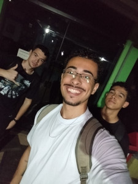
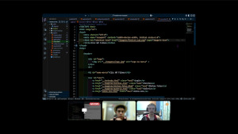

Foto do Grupo


Descrição do trabalho
Este trabalho foi realizado com o intuito de criar um protótipo de site estático para uma empresa real de fotografia, utilizando HTML e CSS para apresentar os materiais de divulgação e a identidade visual da marca de forma elegante e profissional.
| Nome | Descrição de páginas | Quantidade |
|---|---|---|
| Gustavo | Crud(cadastro), consulta, pacote, sobre-nos, style. | 5 |
| José | Menu, história(minhas fotos), STYLE. | 3 |
| Tiago | Login, cadastro, style. | 3 |